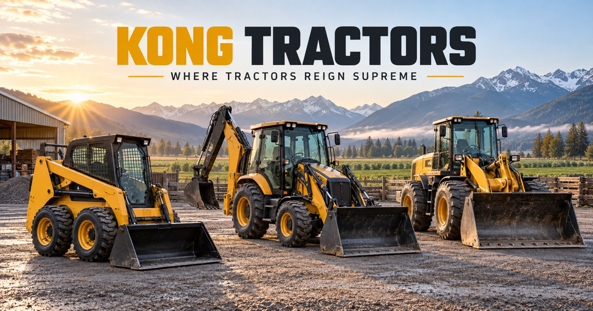

Compare tractors, skid steers, backhoes, loaders and attachments around the work they actually need to do—then confirm availability, compatibility and support for your enquiry.

Machine features vary by make and model. Compare rated capacity, hydraulics, dimensions, attachments, operator protection and warranty terms before choosing.
Compact and versatile, ideal for a variety of tasks on any farm — easy to maintain and cost-effective to run.
Powerful digging capabilities with excellent maneuverability, smooth operation, and versatile attachments.
Efficient loading and unloading with robust lifting capacity for the heaviest jobs on the farm.
From routine check-ups to compatible parts, Kong Tractors' service team keeps downtime to a minimum.
Regular check-ups and servicing to prevent downtime and extend equipment life.
Skilled technicians ready to address any mechanical issues swiftly and efficiently.
Access to a wide range of compatible parts to ensure your equipment operates at its best.
Book a service appointment online or by phone — we'll work around your season.
Kong Tractors covers skid steers, rubber-tire backhoes, front loaders and common farm, construction and winter attachments.
Coverage and parts availability depend on the make, model and location. Send the machine details so the right options can be confirmed.
The site currently focuses on the Fraser Valley, Metro Vancouver and nearby British Columbia communities.